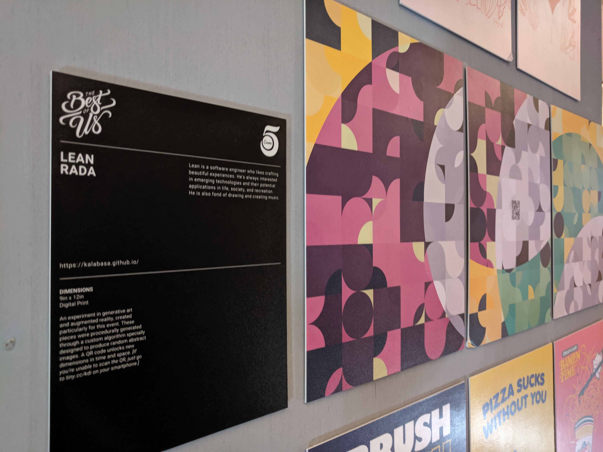

Dimensions
Generative art and augmented reality
On August 2019, I made an augmented reality procedural art experience for a small exhibit at the office where I worked.
Project details- released
- 2019
- role
- creator
- platform
- Web
- tech
- three.js, Vue.js, image processing

I joined the art exhibit because it sounded like a fun opportunity to push myself and learn new things!
I knew right away that the medium had to be HTML, CSS, and JS, and I wanted it to somehow be an interactive experience.
 Scrapped first attempt
Scrapped first attempt
After struggling for inspiration (and after one failed attempt), I’ve come up with a generative art (procedural art) and augmented reality concept.
The general plan was to make two components — one physical print and one AR app.
I wrote about it in detail in the following posts: